The calendar is often understood as a neutral instrument for measuring time. Yet every calendar is a designed system that transforms abstract time into lived experience. It organizes social rhythms, structures labour, regulates rituals, and encodes a particular vision of the world while projecting the future a society considers desirable. Rather than simply recording time, calendars actively produce it.
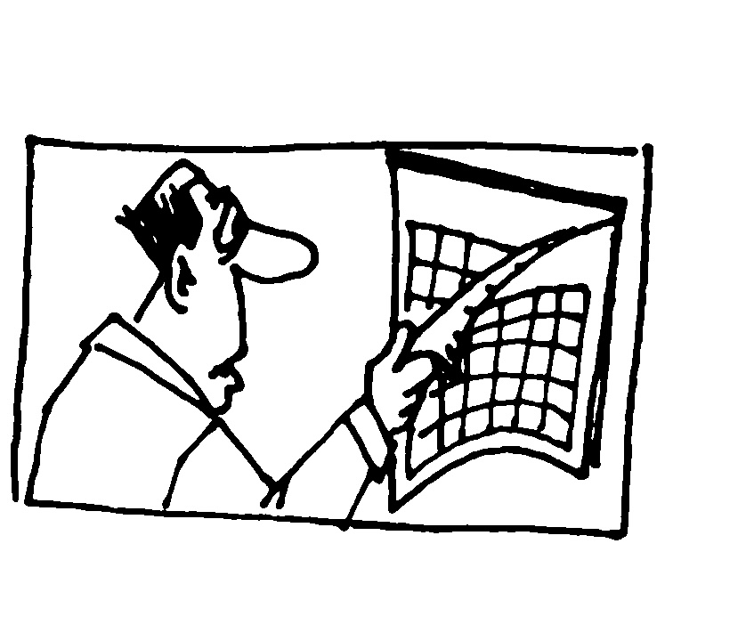
This project began with a simple question:
How can the calendar be reinterpreted through a speculative lens? By treating the calendar as a design artefact rather than a fixed convention, we explored its potential as a medium for imagining alternative organizations of time. Consequently, this process resulted in the imagining alternative forms of society.
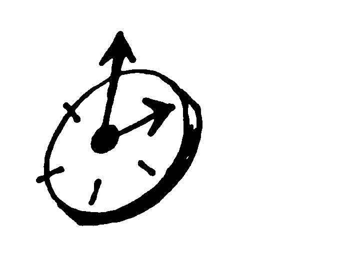
Our research examined six historical and cultural calendars, each embodying a distinct ideological relationship to temporality.
The French Revolutionary Calendar attempted to sever ties with the Christian past and establish a rational, secular republic.
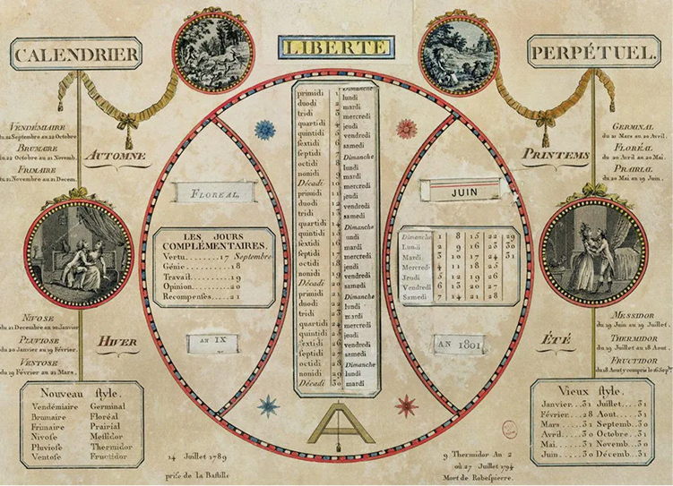
The International Fixed Calendar pursued industrial efficiency through perfect regularity.
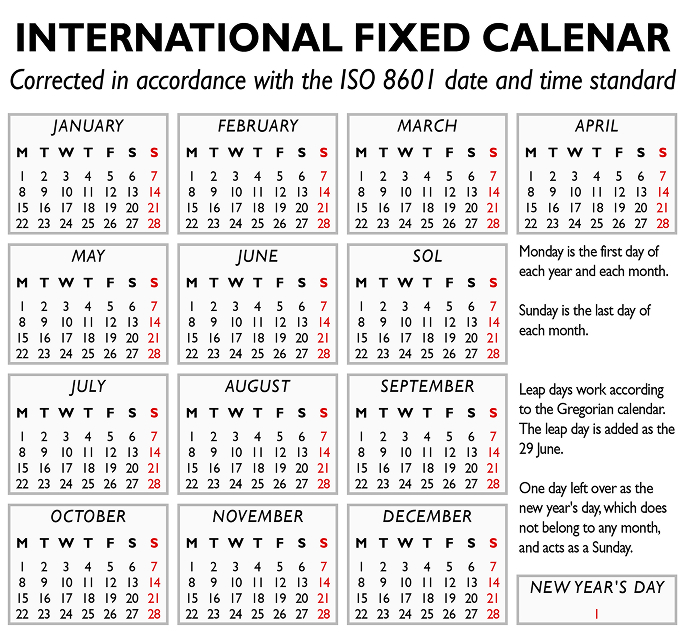
The Soviet Calendar sought to reorganize social life around continuous production and collective labour.
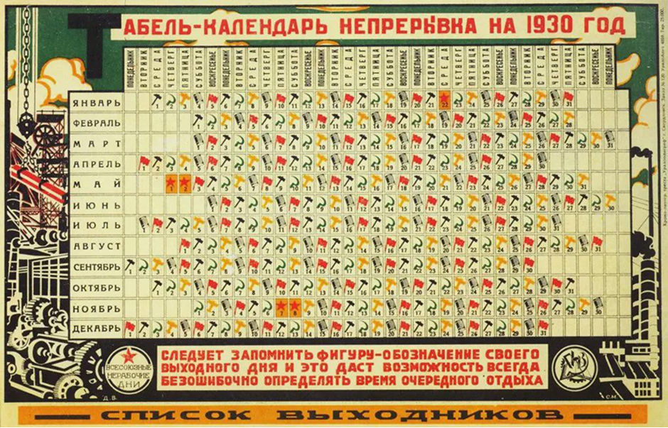
The Technocratic Calendar imagined time optimized through scientific management and technological governance.
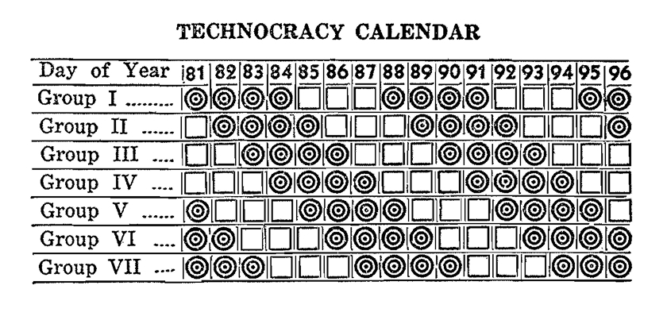
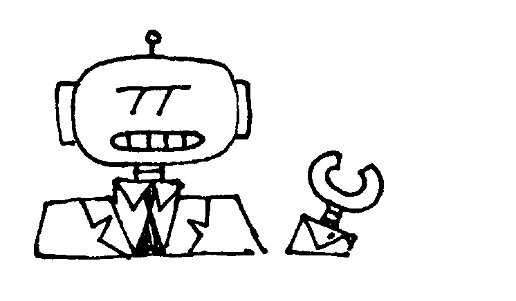
The Anishinaabe calendar organizes time through ecological cycles, relationships with the land, and seasonal knowledge. The Maya calendar proposes an understanding of time as cyclical, cosmological, and deeply embedded within ritual and astronomy.
The Maya calendar proposes an understanding of time as cyclical, cosmological, and deeply embedded within ritual and astronomy.
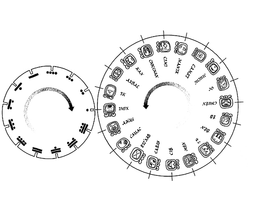
Rather than treating these calendars as historical curiosities, we approached them as materialized ideological systems. Each calendar reveals that time is never neutral: it is designed, negotiated, and embedded within cultural values. Every method of dividing the year privileges particular relationships between humans, work, nature, spirituality, community, and progress.
These historical explorations became the foundation for speculative design. Instead of asking which calendar is most accurate or efficient, we asked what kinds of societies different calendars might produce if they were adopted today. What happens when the need for a single universal calendar becomes less important than the diversity of temporal cultures it might contain?
The resulting speculation imagines a future in which dignified survival is no longer dependent on labour, allowing communities to flourish independently of globalization and consumer production. Within this pluriversal society, calendars once again become vernacular expressions of culture rather than universal standards. Different understandings of time coexist simultaneously, each reflecting the values, priorities, and rhythms of the communities that sustain them.
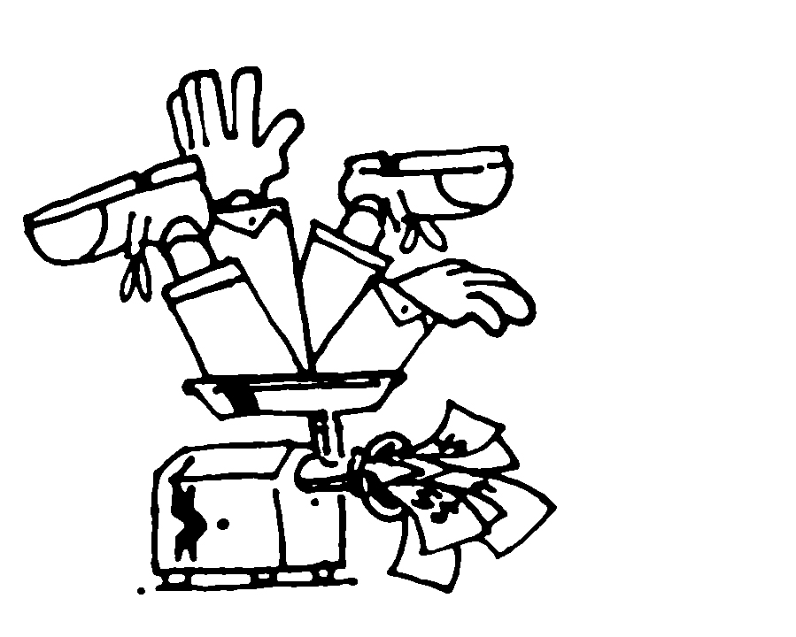
Materially, these speculative calendars are presented side by side on a wooden display rack. Their sequence reveals a progression of embodied ideologies and social ruptures, transforming the artefact into a tangible support for reflecting on the temporal systems that shape our lives. Displayed together, they invite comparison rather than hierarchy, suggesting that no single organization of time is inevitable.
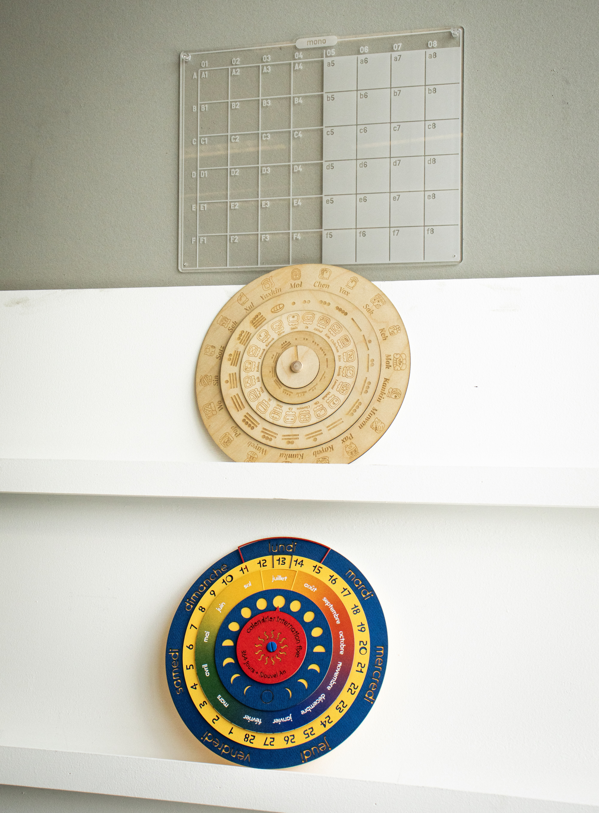
Imagining a contemporary society operating under speculative calendars opens a space for questioning what the Gregorian calendar has normalized, and what alternative temporalities might offer instead.
The calendar becomes more than a tool for coordination; it becomes a machine for dreaming, capable of manifesting multiple futures that coexist within the same world.
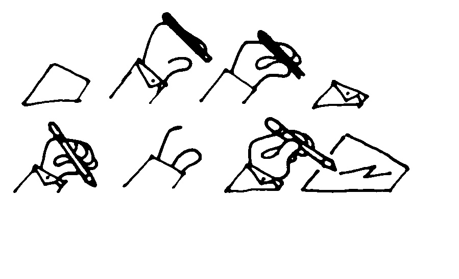
Credits
Project Direction & Design: Victor Percoco
Illustrations: Samuel Caron
Photography: Valeriy Horomanschiy
Calendar prototyping and design :
Technocratic: Samuel Caron
INTL Lunar: Valeriy Horomanschiy
Neo-Mayan: Victor Percoco
Sources
Ascott, Roy. "The Cybernetic Stance: My Process and Purpose." In Telematic Embrace: Visionary Theories of Art, Technology, and Consciousness, édité par Edward A. Shanken, 112-120. Berkeley : University of California Press, 2003.
Cotsworth, M.B. (1905). The Rational Almanac: Tracing the Evolution of Modern Almanacs from Ancient Ideas of Time, and Suggesting Improvements. Author.
Gareth Dale. "Davos and 'capitalist time'". The Ecologist. 22 janvier 2019. https://theecologist.org/2019/jan/22/davos-and-capitalist-time
Milbrath, Susan., Anne S. Dowd. Cosmology, calendars, and horizon-based astronomy in ancient Mesoamerica. Boulder, Colorado : University Press of Colorado, 2015.